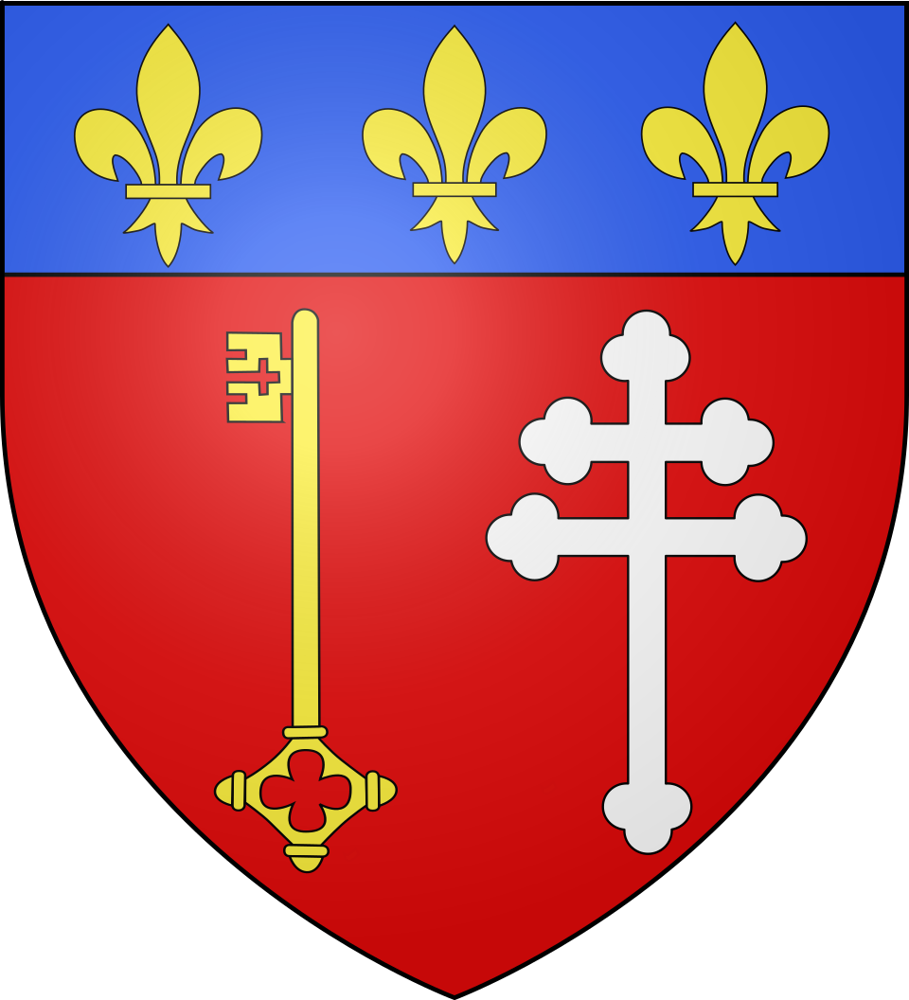
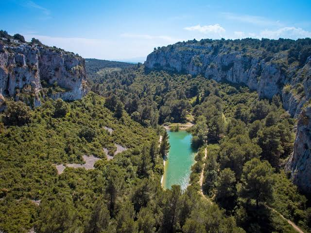

Narbonne-Plage
Mer et ClapeLa façade méditerranéenne de Narbonne au pied du massif de la Clape


⟹ Sites Emblématiques ⟸

Narbonne-Plage constitue aujourd’hui la façade maritime de Narbonne, mais le littoral narbonnais possède une histoire beaucoup plus ancienne que la station balnéaire elle-même. Dans l’Antiquité, les lagunes et les graus de ce secteur appartiennent au vaste système maritime permettant à Narbo Martius de communiquer avec la Méditerranée.

Pendant des siècles, ce rivage reste beaucoup moins urbanisé que la ville de Narbonne. Les activités humaines se concentrent autour de la pêche, des parcours pastoraux, de la vigne et de l’exploitation des ressources des étangs. Le massif de la Clape, ancienne île progressivement rattachée au continent par les dépôts alluviaux, domine le paysage.
La vocation balnéaire s’affirme surtout au XXe siècle avec l’amélioration des routes et l’essor des congés. Un habitat de villégiature apparaît le long d’un cordon littoral jusque-là peu construit. La station se développe progressivement face à une longue plage de sable, tout en demeurant administrativement un quartier de Narbonne.
Le port de plaisance joue un rôle important dans cette transformation. Créé en 1948 puis agrandi en 1980, il marque aujourd’hui la jonction entre Narbonne-Plage et Saint-Pierre-la-Mer et ouvre directement sur la Méditerranée.
L’urbanisation touristique s’accompagne progressivement d’équipements, de commerces et d’animations saisonnières. La station conserve néanmoins un rapport immédiat avec les espaces naturels : à l’ouest et au nord, les reliefs calcaires, pinèdes, garrigues et vignobles du massif de la Clape forment un arrière-pays spectaculaire.
Narbonne-Plage est aujourd’hui à la fois une station familiale, un quartier habité toute l’année et un point de départ privilégié vers la Clape. La ville de Narbonne indique une plage de plusieurs kilomètres et un port de 581 emplacements ; l’ensemble bénéficie depuis longtemps du Pavillon Bleu, associé à la qualité environnementale des plages et du port.
Cette double identité — quartier maritime d’une cité deux fois millénaire et station balnéaire du XXe siècle — fait de Narbonne-Plage un prolongement contemporain de l’histoire narbonnaise vers la Méditerranée.
La force de Narbonne-Plage tient à la proximité immédiate entre la mer et la Clape. En quelques minutes, on passe d’un front de mer très ouvert aux reliefs de garrigue, aux pinèdes et aux vignobles.
Ici, la Méditerranée n’est jamais séparée de la garrigue : Narbonne-Plage vit au rythme de ces deux paysages.
— Paysage de la Côte du MidiLe belvédère aménagé sur la route de Narbonne permet de comprendre cette géographie : la station occupe la frange littorale tandis que le massif forme un arrière-plan rocheux qui la sépare de la plaine narbonnaise.
Saint-Pierre-la-Mer station voisine accessible par le front littoral et la piste cyclable.
Gouffre de l’Œil Doux curiosité géologique majeure du massif de la Clape.
Narbonne centre historique, cathédrale, Via Domitia et musée Narbo Via.
Gruissan vieux village, Tour Barberousse, salins et plage des Chalets.